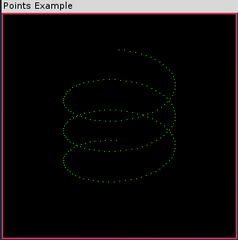
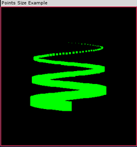

绘制点
Table of Contents
1 绘制图形
简单来说，图元只是一组顶点的集合，它们构成了在屏幕上所绘制的形状。OpenGL共有 10种图元 ，从空间中简单的一个点到任意数量边的闭合多边形。
绘制图元的其中一种方式就是使用 glBegin 命令告诉OpenGL开始对一组顶点进行解释，把它作为一个特定的图元。然后，可以调用 glEnd 命令结束组成这个图元的顶点列表。但我们可以使用 GLTools 提供的批处理器来完成绘制，具体参见 一个简单批次容器 。
| 图元 | 描述 |
|---|---|
| GL_POINTS | 每个顶点在屏幕上都是一个单独的点 |
| GL_LINES | 每一对顶点定义了一个线段 |
| GL_LINE_STRIP | 一个从第一个顶点依次经过每个后续顶点而绘制的线条 |
| GL_LINE_LOOP | 和GL_LINE_STRIP相同，但最后一个顶点和第一个顶点也连接了起来 |
| GL_TRIANGLES | 和3个顶点定义了一个新的三角形 |
| GL_TRIANGLE_STRIP | 三角形带：共用一个条带（strip）上的顶点的一组三角形 |
| GL_TRIANGLE_FAN | 以一个圆点为中心呈扇形排列，共用相邻顶点的一组三角形 |
| GL_QUADS | 用于绘制四边形（不常用） |
| GL_QUAD_STRIP | 四边形带（不常用） |
| GL_POLYGON | 绘制任意数量边的多边形（不常用） |
2 综合例子
下面的例子展示了前面7种常用的图元的渲染效果图。运行示例程序，并按空格键，程序将依次从GL_POINTS到GL_TRIANGLE_STRIP图元进行演示。我们还可以用方向键来沿x轴和y轴旋转这些渲染效果图。
CANNOT INCLUDE FILE ./program/opengl/Src/Chapter03/Primitives/Primitives.cpp
3 点
为了在3D画布中绘制一个点，可以使用OpenGL函数 glVertex 。在所有OpenGL API中，这无疑是最常用的函数之一。这是所有 OpenGL 图元的“最小公约数”，即空间中的点。 glVertex 函数可以接受 1至4个 任意数值类型（从byte到double）的参数。
3.1 3个参数的 glVertex
下面这行代码在坐标系统中指定了一个点，其位置在x轴上为50个单位，在y轴上为50个单位，在z轴上为0个单位。
glVertex3f(50.0f, 50.0f, 0.0f);
我们所使用的这种 glVertex 形式接受3个参数，分别表示x、y和z值。
由 glVertex3f(50.0f,50.0f,0.0f)所
指定的点 (50, 50, 0)
| y
|
| --
+----/ (50,50,0)
|--/ |
-----------/----+------- x
--/ |
-/ |
-/ |
z |
|
3.2 2个参数的 glVertex
glVertex的其他两种形式分别接受2个和4个参数。例如上面的代码可以改写成：
glVertex2f(50.0f, 50.0f);
只接受2个参数的 glVertex 指定了x和y的值，z坐标的值总是默认为0.0。
3.3 4个参数的 glVertex
带4个参数的 glVertex 函数 —— =glVertex4=，使用第4个坐标值w来表示 缩放度 （如果未指定这个值，表示采用默认值1.0）。
3.4 画点
glBegin(GL_POINTS); // 选择点作为图元 glVertex3f(0.0f, 0.0f, 0.0f); // 指定一个点 glVertex3f(50.0f, 50.0f, 50.0f);// 指定另外一个点 glEnd(); // 完成绘点
glBegin 的参数 GL_POINTS 告诉OpenGL接下来的顶点将被用来画点。这里列出了2个顶点，它们将被解释成2个特定的点，并且都将被绘制。
3.4.1 第一个例子
3.4.2 输出

3.4.3 分析
重点考虑 glBegin 和 glEnd 之间的代码，这段代码计算 0° 和 360° 之间的一个角度1，共进行3次。在这个程序中，我们用弧度而不是角度来表示角。每次当一个点被绘制时，z值都会稍微增加。
3.5 设置点的大小
当我们绘制一个点时，在默认情况下点的大小是1个像素。我们可以使用 glPointSize 函数修改点的大小。
void glPointSize(GLfloat size);
glPointSize 函数接受1个参数，它用于指定被绘点的近似直径（以像素计）。但是，点的大小设置还是存在限制，我们应该确保自己所指定的点大小是可行的。我们可以使用下面的代码，获得点大小的范围以及它们之间的最小间隔值：
GLfloat sizes[2]; // 存储受支持的点大小范围 GLfloat step; // 存储受支持的点大小增量 // 获得受支持的点大小范围以及增量大小 glGetFloatv(GL_POINT_SIZE_RANGE, sizes); glGetFloatv(GL_POINT_SIZE_GRANULARITY, &step);
这里，size数组将包含两个元素，分别表示 glPointSize 的最小有效值和最大有效值。另外，变量 step 表示点大小范围之内最小允许的步进值。指定一个位于范围之外的值并不会产生错误，系统将使用最大或最小受支持的值，也就是靠近指定值的有效值。
点和其他几何图形不同，它并 不会受到透视除法的影响 。也就是说不会有“近大远小”的变化。另外，点总是正方形的像素，即便使用 glPointSize 增加点的大小，情况也不会发生变化，我们所得到的只是更大的方块而已！为了获得圆点，必须在抗锯齿模式下绘制点。
还可以通过使用程序点大小模式来设置点的大小。
glEnable(GL_PROGRAM_POINT_SIZE);
这种模式下允许我们通过编程在顶点着色器或几何着色器中设置点的大小。着色器内建变量为 gl_PointSize，并且在着色器源代码中，只要如下设置即可。
gl_PointSize=5.0;
3.5.1 例子
3.5.2 输出

3.5.3 分析
这个例子说明了一些重要的概念。初学者必须注意，必须在 glBegin/glEnd 语句之外调用 glPointSize 函数。在 glBegin/glEnd 之间，并不是所有的OpenGL函数都是合法的。尽管 glPointSize 会影响它后面所有将被绘制的点，但是在调用 glBegin(GL_POINTS)之前，这些点并不会被绘制。
另外，读者可能会疑惑为什么可以用有一个小于1的值作为点大小的步进值。如果值1.0表示1个像素，那么怎样才能绘制有一个大小为2.5像素的点呢？
这个问题的答案是，glPointSize函数所指定的点大小并不是以像素为单位的准确点大小，而是一个圆的近似直径，这个圆恰好包含了绘制这个点所使用的所有像素。我们可以通过启用点平滑功能，让OpenGL把点画得更像圆（也就是说，画成小型的填充圆）。点平滑和直线平滑都属于抗锯齿的话题。
Footnotes:
1 要注意：C运行时函数 sin() 和 cos() 接受的是 弧度 而不是 角度 表示的角度。一个圆的弧度是2xPI，而PI是个无理数，其值近似为3.1416。